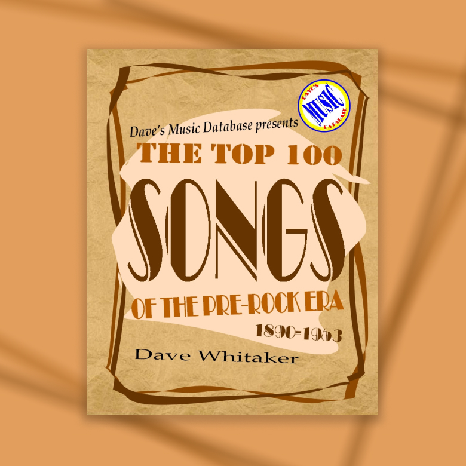
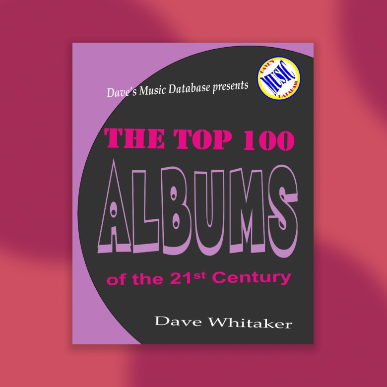
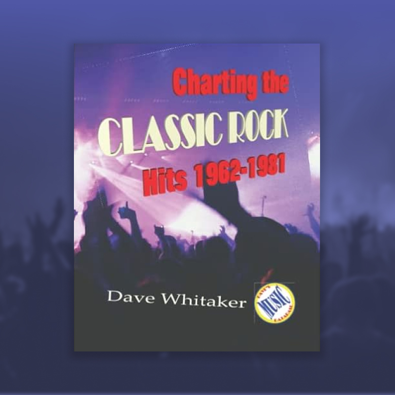

the top 100 songs of
the pre-rock era
1890-1953
buy now on amazon
Songwriters, big bands, and barbershop quartets ruled. Broadway and sheet music drove popularity. This book focuses on songwriters such as Irving Berlin and George M. Cohan and musicians like Bing Crosby, Glenn Miller, and Al Jolson. Compiled from sales figures, and chart data, and hundreds of best-of lists, these are the best songs of roughly the first half of the 20th century.

the top 100 songs of
the rock era
1954-1999
buy now on amazon
In April 2011, I published my first Dave’s Music Database book – The Top 100 Songs of the Rock Era, 1954-1999. In celebration of the 10th anniversary, I am prepping a new edition of the book. In addition to integrating more lists, this edition reflects the effect of streaming and online video on even the pre-digital era. Newer sales data and more charts have been incorporated. Awards given to songs have been updated. 17 new songs make appearances on the list.

the top 100 songs of
the digital era
2000-2019
buy now on amazon
This is the third in a series, following The Top 100 Songs of the Pre-Rock Era, 1890-1953 and The Top 100 Songs of the Rock Era, 1954-1999. Combined the three books cover 300 songs representing 130 years in the history of recorded music!
the top 100 albums of
all time
buy now on amazon
Creating a list of the best albums of all time was really the bread and butter for the inspiration behind Dave’s Music Database more than a decade ago. This aggregate list was created by compiling more than 150 best-of lists from all manner of music publications and entities and crunching those figures into a database along with sales figures, chart results, critical ratings, and various awards.

Top 100 Albums of
the 21st Century
2000-2022
coming to amazon soon
The book Top 100 Albums of All Time was published by Dave’s Music Database in 2014. It aggregated more than 150 best-of lists from all manner of music publications and entities and crunching those figures into a database along with sales figures, chart results, critical ratings, and various awards. The book only featured one album from the 21st century (Eminem’s The Marshall Mathers LP) and, frankly, if I were to revise the book I’d re-focus it just on the 20th century. Either way, this book serves as a sequel, keying in on the top 100 albums of the 21st century.

Charting the Classic Rock Hits
1962-1981
buy now on amazon
Billboard magazine launched an Album Rock chart in 1981. It featured Eric Clapton, Journey, REO Speedwagon, Rush, Styx, The Who, and other acts which are now called “classic rock.” This book analyzes more than 70 classic-rock best-of lists to gauge how classics like Led Zeppelin’s “Stairway to Heaven,” the Eagles’ “Hotel California,” and Queen’s “Bohemian Rhapsody” might have fared had a classic rock chart existed then.